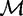
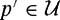
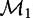

|
| |||||||||||||
|
|
||
Now that we understand how to determine the dimension of a configuration space, we can begin to explore its topology and geometry, each of which plays a vital role in developing and analyzing motion-planning algorithms. Some basic concepts from topology are discussed in appendixes B and C.
Topology is a branch of mathematics that considers properties of objects that do not change when the objects are subjected to arbitrary continuous transformations, such as stretching or bending. For this reason, topology is sometimes referred to as "rubber sheet geometry." Imagine a polygon drawn on a rubber sheet. As the sheet is stretched in various directions, the polygon's shape changes; however, certain properties of the polygon do not change. For example, points that are inside the polygon do not move to the outside of the polygon simply because the sheet is stretched.
Two spaces are topologically different if cutting or pasting is required to turn one into the other, as cutting and pasting are not continuous transformations. For example, the configuration spaces of the circular mobile robot and the two-joint planar arm (T2) are topologically different. If we imagine as the surface of a rubber doughnut, we see that no matter how we stretch or deform the doughnut (without tearing it), the doughnut will always have a hole in it. Also, if we imagine R2 as an infinite rubber sheet, there is no way to stretch it (without tearing it) such that a hole will appear in the sheet. To a topologist, all rubber doughnuts are the same, regardless of how they are stretched or deformed (figure 3.10). Likewise, all rubber sheet versions of R2 are the same.
One reason that we care about the topology of configuration space is that it will affect our representation of the space. Another reason is that if we can derive a path-planning algorithm for one kind of topological space, then that algorithm may carry over to other spaces that are topologically equivalent (see, e.g., chapter 4, section 4.6).
Since topology is concerned with properties that are preserved under continuous transformations, we begin our study of the topology of configuration spaces by describing two types of continuous transformations: homeomorphisms and diffeo-morphisms. Appendix C provides an introduction to differentiable transformations.
A mapping φ: S → T is a rule that places elements of S into correspondence with elements of T. We respectively define the image of S under φ and the preimage of T by
If φ(S) = T (i.e., every element of T is covered by the mapping) then we say that φ is surjective or onto.If φ puts each element of T into correspondence with at most one element of S, i.e., for any t ∊ T, φ−1(t) consists of at most one element in S, then we say that φ is injective (one-to-one). If φ is injective, then when s1 ≠ s2 we have φ(s1) ≠ φ(s2) for s1, s2 ε S. Maps that are both surjective and injective are said to be bijective. Figure 3.11 illustrates these definitions. As another example, the map sin: is bijective, whereas sin: is only surjective. Bijective maps have the property that their inverse exists at all points in the range T, and thus they allow us to move easily back and forth between the two spaces S and T. In our case, we will use bijective maps to move back and forth between configuration spaces (whose geometry can be quite complicated) and Euclidean spaces.
We will consider two important classes of bijective mappings.
If φ: S → T is a bijection, and both φ and φ−1 are continuous, then φ is a homeomorphism. When such a φ exists, S and T are said to be homeomorphic.
A mapping φ: U → V is said to be smooth if all partial derivatives of φ,of all orders, are well defined (i.e., φ is of class C∞). With the notion of smoothness, we define a second type of bijection.
A smooth map φ: U → V is a diffeomorphism if φ is bijective and φ−1 is smooth. When such a φ exists, U and V are said to be diffeomorphic.
The condition for diffeomorphisms (smoothness) is stronger that the condition for homeomorphisms (continuity), and thus all diffeomorphisms are homeomorphisms.
To illustrate these ideas, consider three one-dimensional surfaces: a circle, denoted by ; an ellipse, denoted by ; and a "racetrack," denoted by . The racetrack consists of two half-circles connected by straight lines (figure 3.12). We define these shapes mathematically as
| (3.2) |
|
| (3.3) |
|
| (3.4) |
|
with
| (3.5) |
|
Note that these surfaces are implicitly defined as being the set of points that satisfy some equation f (x, y) = 0.
In some ways, these three surfaces are similar. For example, they are all simple, closed curves in the plane; all of fc(x, y), fe(x, y), and fr (x, y) are continuous. In other ways, they seem quite different. For example, both fc(x, y) and fe(x, y) are continuously differentiable, while fr (x, y)is not. We can more precisely state the similarities and differences between these surfaces using the concepts of homeomorphism and diffeomorphism. In particular, it can be shown that , and are all homeomorphic to each other. For example, the map  given by
given by
is a homeomorphism.
For this choice of φ, both φ and φ−1 are smooth, and therefore, is diffeomorphic to . Neither nor is diffeomorphic to , however. This is because fr (x, y)is not continuously differentiable, while both fc(x, y) and fe(x, y) are. This can be seen by examining the curvatures of the circle, ellipse, and racetrack. For the circle, the curvature is constant (and thus continuous), and for the ellipse, curvature is continuous. For the racetrack, there are discontinuities in curvature (at the points (−1, 1), (−1, −1), (1, 1), (1, −1)), and therefore there is no smooth mapping from either the circle or the ellipse to the racetrack.
We are often concerned only with the local properties of configuration spaces. Local properties are defined on neighborhoods.For metric spaces[5], neighborhoods are most easily defined in terms of open balls. For a point p of some manifold , we define an open ball of radius ∊ by
where d is a metric on .[6] A neighborhood of a point is any subset with such that for every , there exists an open ball . Any open ball is itself a neighborhood. The open disk in the plane is an example. For the point (x0, y0)in the plane, an open ball defined by the Euclidean metric is
We say that S is locally diffeomorphic (resp. locally homeomorphic) to T if for each p ε S there exists a diffeomorphism (resp. homeomorphism) f from S to T on some neighborhood with .
The sphere presents a familiar example of these concepts. At any point on the sphere, there exists a neighborhood of that point that is diffeomorphic to the plane. It is not surprising that people once believed the world was flat - they were only looking at their neighborhoods!
Let us now reflect on the two examples from the beginning of this chapter. For the circular mobile robot, the workspace and the configuration space are diffeomorphic. This is easy to see, since both are copies of . In this case, the identity map φ(x) = x is a perfectly fine global diffeomorphism between the workspace and configuration space. In contrast, the two-joint manipulator has a configuration space that is T2, the torus. The torus T2 is not diffeomorphic to , but it is locally diffeomorphic. If the revolute joints in the two-joint manipulator have lower and upper limits, θℓi <θi <θui, so that they cannot perform a complete revolution, however, then the configuration space of the two-joint manipulator becomes an open subset of the torus, which is diffeomorphic to (globally). This follows from the fact that each joint angle lies in an open interval of , and we can "stretch" that open interval to cover the line. An example of such a stretching function is tan :.
For all of the configuration spaces that we have seen so far, we have been able to uniquely specify a configuration by n parameters, where n is the dimension of the configuration space (two for the planar two-joint arm, three for a polygon in the plane, etc.). The reason that we could do so was that these configuration spaces were all "locally like" n -dimensional Euclidean spaces. Such spaces, called manifolds, are a central topic of topology.
(Manifold) A set S is a k-dimensional manifold if it is locally homeomorphic to , meaning that each point in S possesses a neighborhood that is homeomorphic to an open set in .
While a general k-dimensional manifold is locally homeomorphic to , the configuration spaces that we will consider are locally diffeomorphic to , an even stronger relationship. In fact, when we parameterized configurations in section 3.1, we were merely constructing diffeomorphisms from configuration spaces to .If we construct enough of these diffeomorphisms (so that every configuration in is in the domain of at least one of them), and if these diffeomorphisms are compatible with one another (an idea that we will formalize shortly), then this set of diffeomorphisms together with the configuration space define a differentiable manifold.Wenowmake these ideas more precise.
(Chart) A pair (U, φ), such that U is an open set in a k-dimensional manifold and φ is a diffeomorphism from U to some open set in , is called a chart.
The use of the term chart is analogous to its use in cartography, since the subset U is "charted" onto in much the same way that cartographers chart subsets of the globe onto a plane when creating maps. Charts are sometimes referred to as coordinate systems because each point in the set U is assigned a set of coordinates in a Euclidean space [410]. The inverse diffeomorphism, , is referred to as a parameterization of the manifold.
As an example, consider the one-dimensional manifold For any point x ∊ S1 we can define a neighborhood that is diffeomorphic to . For example, consider the upper portion of the circle, U1 ={x ∊ S1 | x2 > 0}. The chart φ1: U1 → (0, 1) is given by φ1(x) = x1, and thus x1 can be used to define a local coordinate system for the upper semicircle. In the other direction, the upper portion of the circle can be parameterized by with φ−11 (z) =(z,(1 - z)1/2), which maps the open unit interval to the upper semicircle. But S1 is not globally diffeomorphic to ; we cannot find a single chart whose domain includes all of S1.
We have already used this terminology in section 3.1, when we referred to θ1, θ2 as parameters that represent a configuration of the two-joint arm. Recall that (θ1, θ2) ∊ , and that when considered as a representation of the configuration, they define a point in T2, the configuration space, which is a manifold. We now see that in section 3.1, when we represented a configuration of the planar arm by the pair (θ1, θ2), we were in fact creating a chart from a subset of the configuration space to a subset of .
A single mapping from T2 to shown in figure 3.2 encounters continuity problems at θi ={0, 2π}.For many interesting configuration spaces, it will be the case that we cannot construct a single chart whose domain contains the entire configuration space. In these cases, we construct a collection of charts that cover the configuration space. We are not free to choose these charts arbitrarily; any two charts in this collection must be compatible for parts of the manifold on which their domains overlap. Two charts with such compatibility are said to be C∞-related (figure 3.13).
Let (U, φ) and (V, φ) be two charts on a k-dimensional manifold. Let X be the image of U ∩ V under φ, and Y be the image of U ∩ V under φ, i.e.,
These two charts are said to be C∞-related if both of the composite functions
If two charts are C∞-related, we can switch back and forth between them in a smooth way when their domains overlap. This idea will be made more concrete in the example of S1 below.
A set of charts that are C∞-related, and whose domains cover the entire configuration space , form an atlas for . An atlas is sometimes referred to as the differentiable structure for . Together, the atlas and comprise a differentiable manifold. There are other ways to define differentiable manifolds, as we will see in section 3.5.
As an example, consider again the one-dimensional manifold S1. Above, we defined a single chart, (U1, φ1). If we define three more charts, we can construct an atlas for S1. These four charts are given by
The corresponding parameterizations are given by φ−1i :(−1, 1) → Ui, with
It is clear that the Ui cover S1, so to verify that these charts form an atlas it is only necessary to show that they are C∞-related (figure 3.14). Note that
U1 ∩ U2 = U3 ∩ U4 =⊘, so we need only check the four pairs of composite maps:
In each case, φi ∘ φ−1j (z)is smooth on each of the open unit intervals that define the domains for the composite mappings given above. For example, φ1 ∘φ3−1 (z) = 1− z2.
This collection of four charts is not minimal; it is straightforward to find two charts to cover S1 (see problem 9).
We say that a manifold is path-connected, or just connected, if there exists a path between any two points of the manifold.[7] All of the obstacle-free configuration spaces that we will consider in this text, e.g., , Sn, and T n, are connected. The presence of obstacles, however, can disconnect the free configuration space . In this case, the free configuration space is broken into a set of connected components, the maximal connected subspaces. In figure 3.5(c), for example, obstacles break the mobile robot's free configuration space into two connected components. There can be no solution to a motion-planning problem if qstart and qgoal do not lie in the same connected component of  .
.
A space is compact[8] if it resembles a closed, bounded subset of . A space is closed if it includes all of its limit points. As examples, the half-open interval is bounded but not compact, while the closed interval [0, 1] is bounded and compact. The space is not bounded and therefore not compact. The spaces Sn and Tn are both compact, as they can be expressed as closed and bounded subsets of Euclidean spaces. The unit circle S1, e.g., can be expressed as a closed and bounded subset of .
In configuration spaces with obstacles or joint limits, the modeling of the obstacles may affect whether the space is compact or not. For a revolute joint subject to joint limits, the set of joint configurations is compact if the joint is allowed to hit the limits, but not compact if the joint can only approach the limits arbitrarily closely.
The product of compact configuration spaces is also compact. For a noncompact space , if  is compact, then it is called the compact factor of the space. Compact and noncompact spaces cannot be diffeomorphic.
We are focusing on configuration spaces that are manifolds, and more specifically differentiable manifolds, but it is important to keep in mind that not all configuration spaces are manifolds. As a simple example, the closed unit square is not a manifold, but a manifold with boundary obtained by pasting the one-dimensional boundary on the two-dimensional open set (0, 1) × (0,1). Also, some parallel mechanisms with one degree of freedom have configurations from which there are two distinct possible motion directions (i.e., the configuration space is a self-intersecting figure eight). It is beyond the scope of this chapter to discuss other types of configuration spaces, but be aware: if you cannot show it to be a manifold, it may not be!
[5]A metric space is a space equipped with a distance metric. See appendix C.
[6]One can define all topological properties, including neighborhoods, without resorting to the use of metrics, but for our purposes, it will be easier to assume a metric on the configuration space and exploit the metric properties.
[7]For more general spaces, the concepts of path-connectedness and connectedness are not equivalent, but for a manifold they are the same. More generally, a space is connected if there is no continuous mapping from the space to a discrete set of more than one element.
[8]In topology, a space is defined to be compact if every open cover of the space admits a finite subcover, but we will not use these concepts here.
|
|
||
|